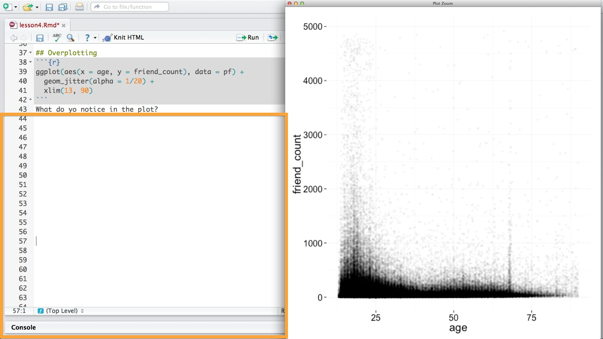

Data Visualizations & EDA
Back to Home
01. What is EDA?
02. Pseudo-Facebook User Data
03. Notebooks vs. RStudio
04. Pseudo Facebook User Data Notebook
05. Histogram of Users' Birthdays
06. Histogram of Users' Birthdays Notebook
07. Perceived Audience Size
08. Faceting
09. Faceting Notebook
10. Moira's Outlier
11. Friend Count
12. Limiting the Axes
13. Exploring with Bin Width
14. Adjusting the Bin Width
15. Omitting NA Observations
16. Friends by Gender
17. Statistics 'by' Gender
18. Tenure
19. Labeling Plots
20. Statistics, Tenure, & Labeling
21. Likes on the Web
22. Box Plots
23. Box Plots, Quartiles, and Friendships
24. Box Plots Notebook
25. Scatterplots and Perceived Audience Size
26. Scatterplots
27. ggplot Syntax
28. Overplotting
29. Overlaying Summaries with Raw Data
30. Bivariate Plots
31. Recap
Back to Home
28. Overplotting
Overplotting
Question:
Start Quiz:

Solution:
Next Concept